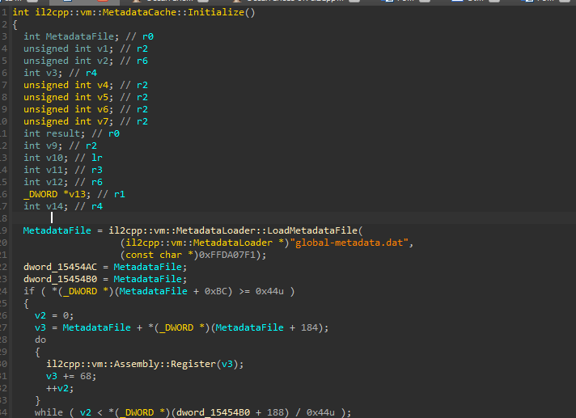
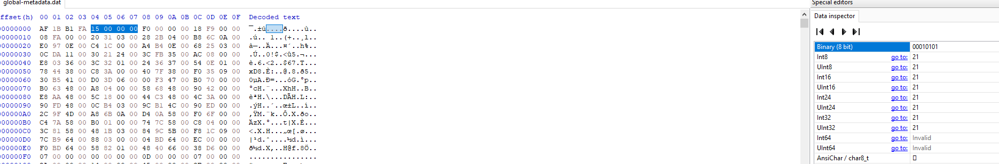
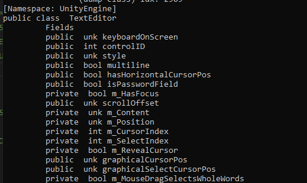
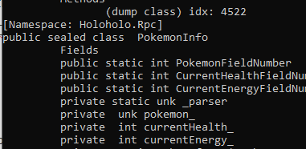

Unity IL2CPP Exploration
Objective today: Obtain the game’s source code / important metadata
In the previous post, I wrote about Unity’s default scripting backend (Mono) and discussed how it can be vulnerable to modifications for game hacking/ modding. I explained that the game’s underlying mechanics could easily be decompiled since the source code was accessible. In today’s write-up, I will share how I reverse engineered IL2CPP, which is very different from Mono. I will share information about the IL2CPP backend and the my attempt of obtaining an IL2CPP game’s source code.
Background Information
IL2CPP is an alternative scripting backend to Mono which was introduced to Unity in 2015.
Last time, we explored Ravenfield, a Unity mono game that runs on Windows platforms. We were easily able to obtain the source code and create a simple infinite ammo hack. (See last post here). However, things changed when I tried to make an IL2CPP hack. It was very time consuming to obtain the game’s source code. So, what makes it difficult to obtain an IL2CPP game’s source code?
Usually, a Unity game is distributed as .NET assemblies that the managed runtime (CLR) runs on the chosen platform, just like any other .NET application. The Mono backend allows these .NET assemblies run in different platforms However, these . NET assemblies, could easily be decompiled. as the Intermediate Language created contains important metadata. Unlike Mono, IL2CPP gathers these assemblies, parses the IL code, creates C++ code that is directly compiled to machine code. Because these assemblies are compiled to machine code, it requires knowledge of x86/ARM and will be much more time consuming to reverse engineer.
Reverse Engineering
I actually wanted to try out reverse engineering a different platform aside from Windows (x86), and stumbled an its .apk file lying around my desktop. It was an old version of Pokemon Go and uses IL2CPP, which is just what I was looking for.
Before I attempt to obtain it’s source code, I learned about the IL2CPP loading process.
IL2CPP Loading Process
IL2CPP uses the platform-specific memory-mapped file support to load the global-metadata.dat file into read-only memory.

In the il2cpp::vm::MetadataCache::Initialize function, A file named “global-metadata.dat” is loaded and saved to the global variable: MetadataFile (This is a dword) . During the build process of an IL2CPP game, this global-metadata.dat file is used and contains .NET metadata that libil2cpp.so will need at runtime.
While investigating the il2cpp::vm::MetadataLoader::LoadMetadataFile function:

I noticed that the LoadMetadataFile function tries to find this global-metadata.dat file somewhere in our disk. It maps global-metadata.dat into memory and returns the pointer to this memory-mapped metadata file
We need to take note of the value (pointer) returned by this function because it is important. All accesses to the metadata by IL2CPP will occur via this pointer.
A case where we can see this pointer is being usedil2cpp::vm::MetadataCache::GetStringFromIndex
For example:


Parsing Metadata
We discovered that IL2CPP loads a metadata file that accessed during runtime. Now, we will explore the contents within that file, and create a metadata parser.

As we can see, global-metadata.dat contains information about the game.

Initially, the first 4 bytes is AF 1B B1 FA. In little-endian , it is 0xFAB11BFA — which tells us that it is a correct metadata file. Following that is the version, which is 21.
A better way to view global-metadata.dat is by creating a metadata parser. With this metadata parser, we are able to effectively handle the structure obtained from the IL2CPP header file:
pub struct Il2CppGlobalMetadataHeader {
pub sanity: i32, // check valid
pub version: i32, // version
pub string_literal_offset: i32,
pub string_literal_count: i32,
...
let (_, metadata_hdr) =
parse_metadata_header(&data).expect("Failed to parse metadata header");
println!("Loader Sanity: {}", metadata_hdr.sanity);
println!("Loader Version: {}", metadata_hdr.version);
The code above parses the metadata file contents to Il2CppGlobalMetadataHeader.
This metadata parser follows the same pattern above but for different IL2CPP structures found from the Unity IL2CPP header file.
Code and Metadata Registration
In the IL2CPP so file, the Code Registration and Metadata Registration contains pointers / offset values which helps us find connections between the the content of the metadata file and actual function addresses.

It is apparent that the functions from the binary do not have enough information to understand how the game specifically works. Therefore, we need to find the code registration and metadata registration.

The il2cpp::vm::MetadataCache::Register function takes in arguments CodeRegistration (dword_1448398 or 0x1448398) and MetadataRegistration (dword_1469ad0 or 0x1469ad0).
Results

Figure 1: Namespace of Unity engine

Figure 2: Fields of Pokemon class

Figure 3: List of images used
Looking at the results, we were able to get important information about the IL2CPP game. Although our objective was to obtain the game’s source code, this was not really what we got. The outcome was mostly classes/ structures needed by the game. The method names of the original game’s source code was extracted, however, we will still need to manually read ARM assembly code line by line.
Conclusion
We are able to obtain information about the IL2CPP game. Although it may seem different from mono, a reverse engineer can still find ways to extract important information. The game mechanic source code will still be in assembly, but with this information it is not that much of a challenge.
Additional Resources:
https://docs.unity3d.com/Manual/scripting-backends.html
https://katyscode.wordpress.com/2020/06/24/il2cpp-part-1/
https://blog.unity.com/technology/the-future-of-scripting-in-unity